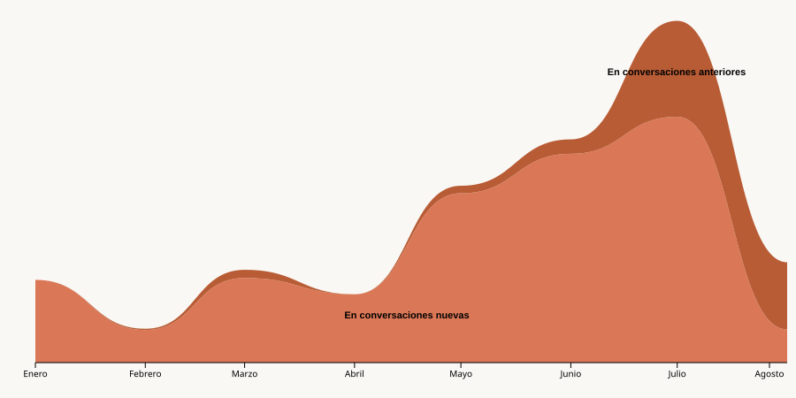

Patrón semanal
¿Qué días recurro más a Claude?
La actividad se concentra de martes a jueves, alcanzando su pico el jueves con 370 consultas. Los fines de semana la interacción cae drásticamente, reflejando una clara pausa en la rutina laboral.
Visualización de datos personales · 2026
principios de 2026 empecé a usar Claude como apoyo para el trabajo, los estudios y mis proyectos personales. Con el tiempo me dio curiosidad entender cómo venía siendo ese hábito, así que decidí analizar mis propios datos de uso en esta herramienta. Esto es lo que encontré:
Período analizado: enero — agosto 2026
Patrón semanal
La actividad se concentra de martes a jueves, alcanzando su pico el jueves con 370 consultas. Los fines de semana la interacción cae drásticamente, reflejando una clara pausa en la rutina laboral.
Distribución horaria
El mapa revela dos franjas de uso bien definidas: una entre la medianoche y las 2hs, y otra más intensa desde el mediodía hasta la medianoche. La mañana aparece casi en blanco. Lejos de un horario fijo, el uso de Claude se adapta a mi rutina — y mi rutina claramente no empieza temprano.

Actividad total
De los 215 días analizados, registré actividad en 162. En otras palabras, interactué con la herramienta 3 de cada 4 días. Más que un recurso puntual, el uso se convirtió en un hábito casi diario integrado de forma natural en mi rutina de trabajo y estudio.

Análisis de profundidad
Un desglose sobre el origen de cada consulta muestra un cambio de dinámica a lo largo del período. Mientras que al principio la norma era iniciar conversaciones nuevas, hacia la segunda mitad del año el uso de hilos anteriores gana peso de forma constante hasta dominar el volumen de interacción.

En ocho meses, pasé de explorar Claude con consultas sueltas a integrarlo como una herramienta más de mi día a día. Los datos muestran que no solo lo uso más, sino que lo uso distinto: con menos conversaciones nuevas, sesiones más profundas, y en horarios que reflejan mi propio ritmo de trabajo.